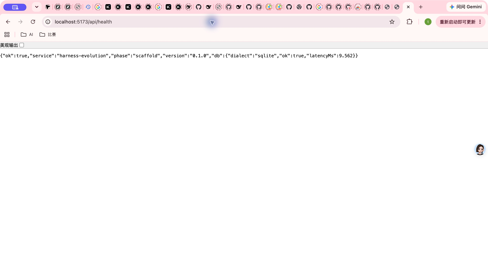
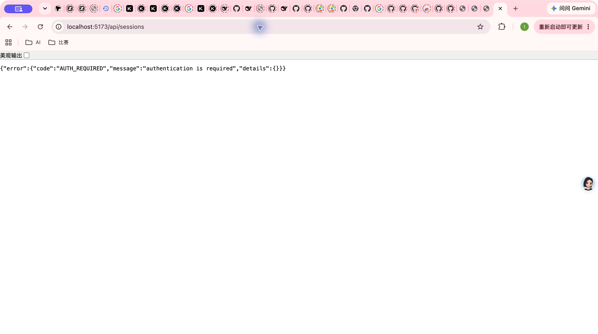
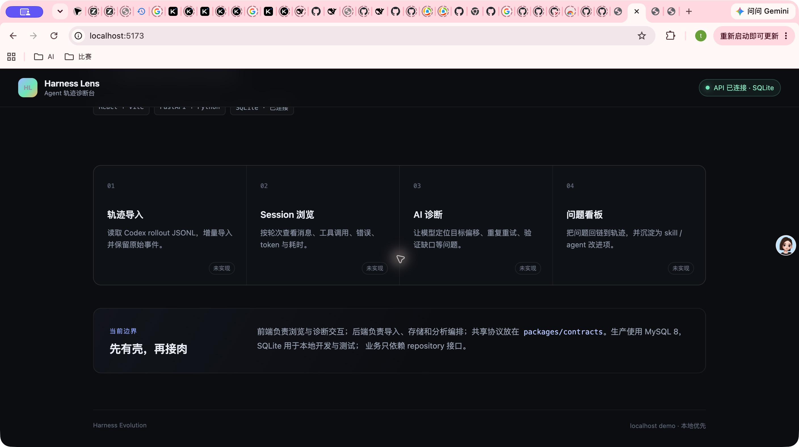
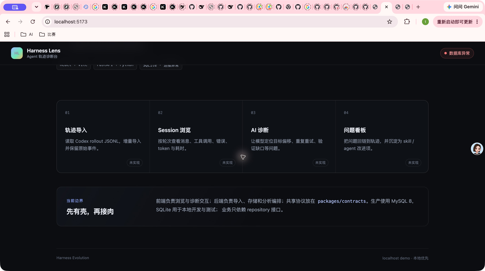
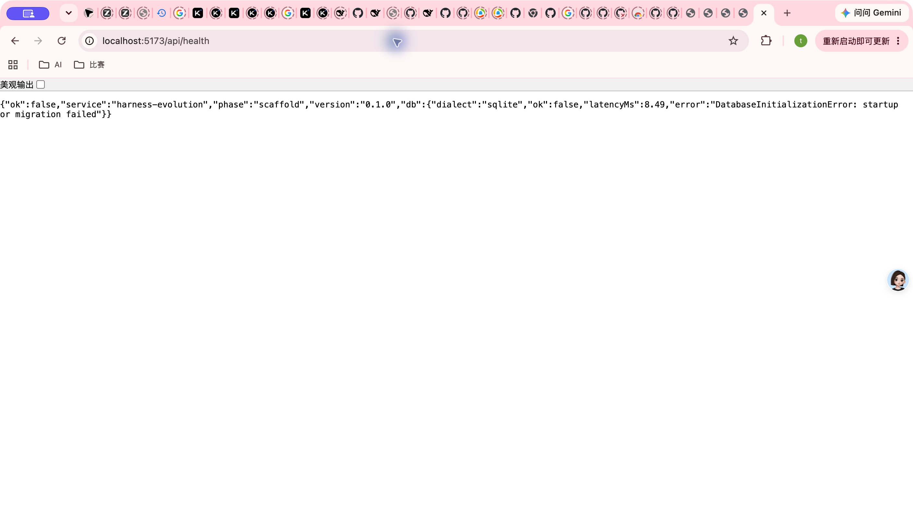

- Commit
- d6779d9
- Branch
- codex/m1-03-database-base
- 正常库
- SQLite · 临时数据目录
- 故障库
- SQLite · 不存在父目录
- 验证路径
- Chrome → Vite :5173 → FastAPI :8787
Computer Use Integration Smoke
M1-03 Database 基座集成 Smoke
真实 Chrome 会话验证了 SQLite 正常态、Vite 代理 health 契约、统一 401，以及故障数据库下的 503 与一致前端状态。6 个场景全部通过，未发现产品缺陷。
6/6场景通过
0产品缺陷
93%后端覆盖率
84.53%前端 branches
Environment and Artifact
2026-10-25 · macOS · Google Chrome · FastAPI + ViteScenario Matrix
6 pass| # | 场景 | 结果 | 断言与证据 | 截图 |
|---|---|---|---|---|
| 01 | 正常首页与服务连接 | PASS | 页面渲染完整；真实 health 请求完成后显示“API 已连接 · SQLite”，无检查中残留。 | 01-home-success.jpeg |
| 02 | 正常 health 契约 | PASS | 经真实代理返回 ok=true、service=harness-evolution、phase=scaffold、db.ok=true、db.dialect=sqlite 和数值 latencyMs；响应不含路径或凭据。 | 02-health-success.jpeg |
| 03 | 受保护 API 401 | PASS | GET /api/sessions 返回统一 {error:{code:AUTH_REQUIRED,message,details}} 外形。 | 03-protected-401.jpeg |
| 04 | 模块与架构说明 | PASS | 四个计划模块、未实现状态、MySQL 8 生产与 SQLite 本地测试文案均可见；桌面布局无横向溢出或遮挡。 | 04-modules-success.jpeg |
| 05 | 数据库故障前端状态 | PASS | API 可达但数据库初始化失败时，顶部显示“数据库异常”，hero 显示“SQLite · 连接异常”；不再显示检查中或已连接。 | 05-db-failure-ui.jpeg |
| 06 | 数据库故障 503 脱敏 | PASS | 代理返回 ok=false、db.ok=false 与固定 DatabaseInitializationError 摘要；FastAPI 日志记录 503，浏览器响应未暴露故障路径、DSN 或凭据。 | 06-db-failure-health.jpeg |
Issues and Observations
No defects foundNo defects were found.
Evidence
6 screenshots




Automated Coverage Assessment
4 areas reviewed| 范围 | 自动化 | 结论 | 建议 |
|---|---|---|---|
Conclusion
Ready to mergem1-03 的正常、认证边界与数据库故障链路均在真实浏览器中符合设计。
- 未发现需要提交新检视意见的产品问题。
- 故障响应保持公开脱敏，诊断信息仅进入服务端日志。
- 前后端覆盖率与跨栈自动化门禁均高于 80%。
Evidence generated from Computer Use screenshots; HTML is rendered from report-data.json.